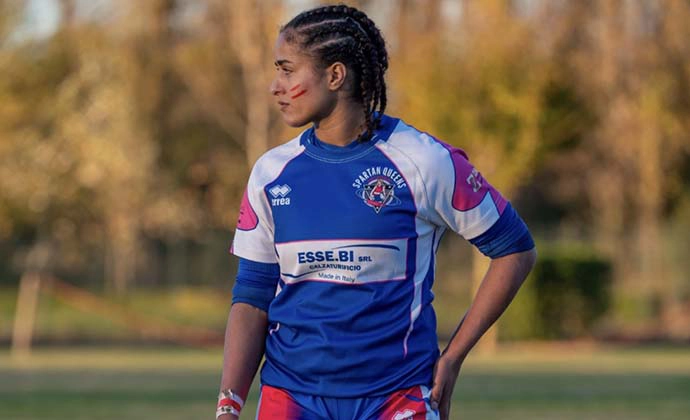
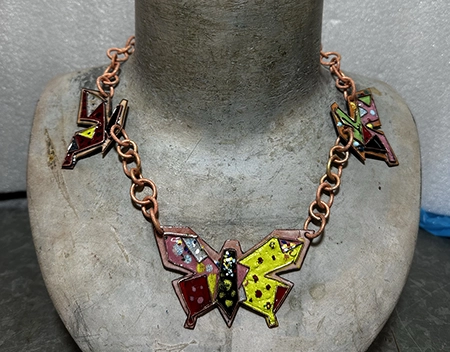
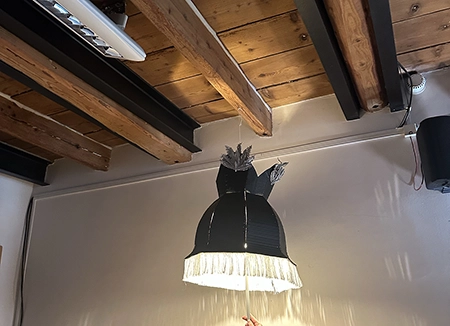
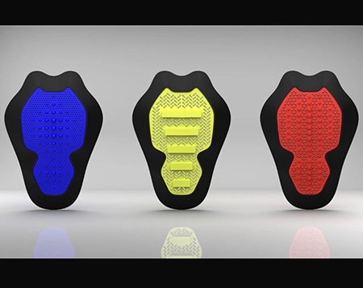
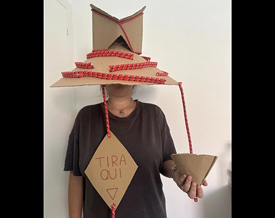

Mi chiamo Lamya, ho 21 anni e sono da sempre affascinata dal mondo dell’arte e del progetto. Mi sento particolarmente legata al design del prodotto, dove posso unire creatività e funzionalità per dare forma alle idee. Amo mettermi alla prova e crescere continuamente. Nel tempo libero pratico rugby: ho giocato in Serie A e sono stata convocata nella Nazionale Italiana. Questo sport mi ha insegnato disciplina, lavoro di squadra e determinazione, valori che porto anche nel mio percorso nel design.
Sono nata in Marocco, un Paese ricco di colori, architetture e meraviglie del design che hanno nutrito la mia curiosità e il mio senso estetico fin da bambina.
A 10 anni mi sono trasferita in Italia, ad Ancona, una città affacciata sul mare Adriatico.
Ancona è un luogo tranquillo ma pieno di vita, dove il mare e le colline si incontrano: qui ho imparato ad apprezzare la semplicità, la calma e la bellezza dei piccoli dettagli.
Ho studiato design dei gioielli alle superiori, dove ho scoperto la mia passione per il mondo del prodotto.
Oggi frequento la laurea triennale in Design all’Università di San Marino, dove sperimento attraverso diversi progetti
che uniscono ricerca, creatività e funzionalità.
Attraverso il mio percorso, sto imparando a trasformare le idee in oggetti che raccontano un modo di pensare e vivere il design.

Liberty
Questa collana l'ho realizzata quando frequentavo le superiori, utilizzando ottone e smalto a caldo.

Betty boop
Questo progetto l'ho realizzato in gruppo all'università, ispirandoci agli anni ’30.
Abbiamo creato un abat-jour principalmente in cartone, integrando anche altri materiali.

SVL
Anche questo progetto, realizzato in gruppo, prevedeva la creazione di un paraschiena in 3D ispirato a uno sport.
Il nostro è stato ispirato al rugby.

Donum
In questo progetto ci è stato chiesto di realizzare un copricapo ispirato a un eroe per noi significativo, utilizzando prevalentemente cartone e integrando altri elementi.
La nostra scelta è ricaduta sui donatori.